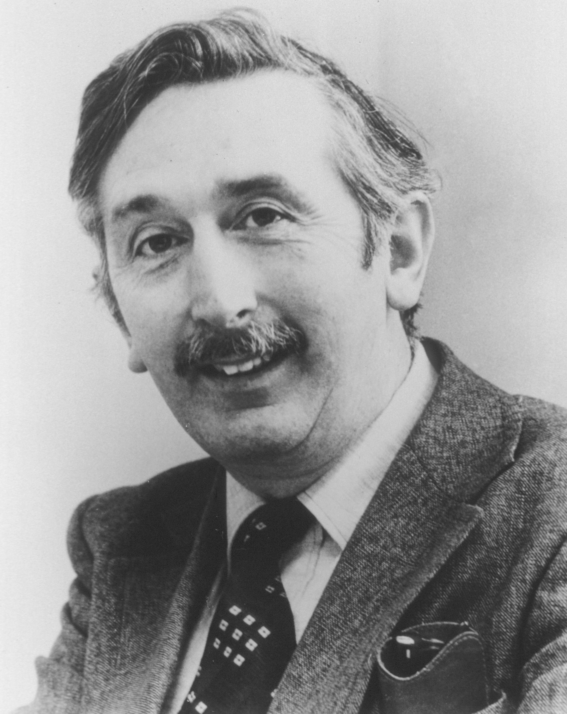
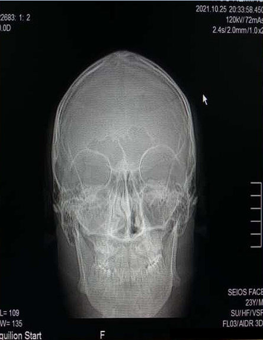
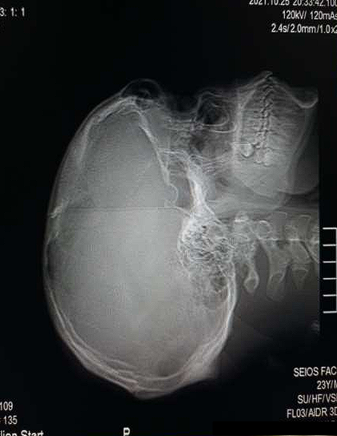

Uma linha do tempo interativa sobre como o tomógrafo evoluiu de um único feixe de raios-X varrendo ponto a ponto até os sistemas multidetectores que capturam o corpo inteiro em segundos.
A tomografia computadorizada surgiu como método de diagnóstico por imagem em 1972, introduzida por G. N. Hounsfield. O método obteve grande repercussão principalmente pela possibilidade de avaliar tecidos moles — músculos, vísceras e, em especial, o parênquima cerebral.
Até então, o diagnóstico de hematoma no traumatismo cranioencefálico, ou mesmo num acidente vascular cerebral, só podia ser feito com segurança na abordagem cirúrgica.
Com o advento da tomografia, abriram-se novas perspectivas — particularmente nas patologias neurológicas. Em pouco tempo a técnica foi ampliada para os demais sistemas e órgãos do corpo humano, passando a integrar os principais centros de diagnóstico por imagem do mundo. Ainda hoje o método segue em transformação, com pesquisas voltadas à redução do tempo de exame e ao desenvolvimento de softwares gráficos de processamento de imagem.

Engenheiro eletricista na EMI. Teve a ideia da tomografia observando que se poderia deduzir o conteúdo de uma caixa a partir de leituras de raios-X em vários ângulos — e construiu o primeiro tomógrafo, testado nele mesmo antes do uso clínico, em 1971.
Nobel de Fisiologia ou Medicina · 1979Físico na Tufts University. Publicou, entre 1963 e 1964, a base matemática para reconstruir uma imagem a partir de projeções de raios-X em múltiplos ângulos — trabalho que passou quase despercebido até o scanner de Hounsfield comprová-lo na prática.
Nobel de Fisiologia ou Medicina · 1979Cormack desenvolveu a teoria e Hounsfield construiu a máquina — cada um, de forma independente, em lados opostos do mundo, sem nunca terem colaborado entre si. Por isso dividiram o Prêmio Nobel de Fisiologia ou Medicina de 1979.
A tomografia trabalha com tubos de raios-X de alta potência. Disposto no interior do gantry, o tubo gira de forma justaposta a um conjunto de detectores — responsáveis por coletar o residual de radiação de um feixe estreito. Durante a aquisição de um corte, enquanto o tubo gira ao redor do paciente, o feixe incide nos detectores em múltiplas projeções, e as informações são enviadas ao computador responsável por reconstruir a imagem.
O tubo de alta potência gira ao redor do paciente, emitindo um feixe estreito de raios-X.
Os detectores, girando junto com o tubo, coletam a radiação residual em múltiplas projeções.
Os dados são enviados ao computador, que reconstrói o corte tomográfico.
Apresentado por Sir Hounsfield, o equipamento tinha um tubo de raios-X simples, de anodo fixo e alvo de dimensões relativamente exageradas — suficiente para suportar o calor gerado pelos sucessivos bombardeios de elétrons. Os cortes eram construídos por meio de um feixe estreito, da espessura aproximada de um lápis, que após atravessar o paciente incidia nos detectores de radiação residual.
Toda geração que você vai ver a seguir é, no fundo, uma forma diferente de organizar estes três elementos ao redor do paciente.
Emite o feixe que atravessa o paciente. Sua trajetória ao redor do corpo — reta, giratória ou eletrônica — é o que define cada geração.
Medem quanto do feixe foi atenuado ao atravessar os tecidos. Quantos detectores existem, e se eles se movem ou ficam fixos, determina a velocidade do exame.
Um algoritmo combina milhares de medidas de atenuação, tiradas em ângulos diferentes, para calcular a densidade de cada ponto e montar o corte transversal.
Voltando às três peças do início: o tubo e os detectores merecem um olhar mais de perto — são eles que respondem pela maior parte do custo, e da evolução técnica, de um tomógrafo.
Os tubos usados em TC são bastante semelhantes aos da radiologia convencional, mas com ênfase especial na dissipação de calor — ficam sujeitos a maior frequência de exposição, exposições mais longas e doses mais altas. Sua disposição dentro do gantry, com o eixo catodo-anodo perpendicular ao movimento de rotação, evita a influência do efeito anódico (heel effect).
Filamento menor, usado quando a potência não excede 20 kW. Alguns equipamentos o selecionam automaticamente em algoritmos de reconstrução de tecidos de alta densidade.
Filamento maior, associado ao segundo ponto focal do tubo — empregado nas exposições de maior potência, suportando a carga térmica das doses mais altas.
A maior exigência térmica dos exames helicoidais e multislice — rotação contínua, sem pausa entre cortes — levou ao desenvolvimento de tubos com vida útil cerca de 6 vezes maior que os da 3ª geração.
Os detectores são tão importantes quanto o tubo — e o principal fator por trás do alto custo dos tomógrafos atuais. Suas características centrais:
Cristais de iodeto de sódio acoplados a pequenas câmaras fotomultiplicadoras. Ao interagir com o feixe, emitem luz na razão direta da intensidade da radiação incidente; o tubo fotomultiplicador amplifica esse sinal, transformando-o numa corrente elétrica de pequena intensidade armazenada pelo computador.
Pequenos tubos com gás nobre em seu interior — geralmente xenônio — que, na presença de radiação, sofrem uma ionização temporária suficiente para gerar uma pequena corrente elétrica, proporcional à radiação residual na trajetória do feixe.
Esquema de funcionamento de um detector de cristal luminescente:
O feixe atenuado pelo paciente incide sobre o cristal do detector.
O iodeto de sódio absorve a radiação e converte parte dela em luz visível.
A intensidade luminosa é diretamente proporcional à intensidade da radiação incidente.
O tubo fotomultiplicador amplifica a luz numa corrente elétrica, lida pelo computador.
Por matriz, entendemos um arranjo de linhas e colunas. A imagem tomográfica é uma imagem matricial: o cruzamento das linhas com as colunas forma os elementos de imagem, chamados individualmente de pixel. A espessura do corte é a terceira dimensão, relacionada à profundidade — e o volume formado pelo pixel mais essa espessura é o voxel.
Área resultante da interseção de uma linha com uma coluna da matriz. É a menor unidade da imagem tomográfica — cada pixel recebe um tom de cinza correspondente à densidade do tecido naquele ponto.
Volume formado pelo pixel somado à espessura do corte. É a verdadeira unidade de dado da tomografia: cada voxel tem um coeficiente de atenuação linear próprio, e o pixel na tela é apenas a sua representação em 2D.
O pixel é a face de cima (a área, em 2D). Ao "puxar" essa área pela espessura do corte, formamos o voxel — o volume de tecido que aquele ponto da imagem realmente representa.
Para reconstruir as estruturas em sua forma real, o tomógrafo precisa de múltiplas tomadas de dados em ângulos de projeção diferentes. É esse conjunto de leituras que o computador transforma em imagem.
O tubo (ou o par tubo-detector) faz dezenas a milhares de leituras em ângulos diferentes ao redor do paciente, a cada corte.
A partir de cada leitura, o computador calcula o quanto o feixe foi atenuado por cada tecido — o coeficiente de atenuação linear.
Cada coeficiente de atenuação vira um valor correspondente numa escala de cinzas: quanto mais denso o tecido, mais claro o tom.
Os valores são distribuídos pelos pixels da matriz. O resultado final é a imagem tomográfica — cada pixel carregando a informação de um voxel inteiro.
A tomografia mede a intensidade da radiação residual depois que o feixe interage com um órgão ou objeto e sensibiliza um detector. Essa intensidade residual é a radiação incidente menos a radiação absorvida pelo objeto.
A imagem tomográfica é formada por milhares de pequenos blocos — um para cada voxel da matriz —, então essa equação fica mais complexa quanto melhor a resolução. Num equipamento atual, com matriz 512×512, ela poderia ser representada assim:
O número de equações cresce com o número de detectores e de projeções usadas. Em equipamentos de alta resolução, reconstruir uma única imagem pode exigir até 200.000 equações — daí a necessidade de um sistema de computação potente e veloz.
O método matemático usado para reconstruir as imagens é chamado de algoritmo. Basicamente três formas de cálculo são usadas para isso:
Método teórico, não usado nos equipamentos atuais. Consiste em obter imagens em diferentes projeções e somar os resultados de cada uma. A imagem final mostra o objeto real, mas contaminada pelo efeito das inúmeras projeções — veja o exemplo abaixo.
Considera um valor médio de atenuação para cada linha ou coluna da imagem, compara com os resultados obtidos e ajusta — somando e subtraindo densidades — até a reconstrução final. Foi o método usado pelo primeiro tomógrafo EMI; mais nítido que a retro-projeção pura, por eliminar boa parte da contaminação.
Usado em quase todos os equipamentos comerciais. Se divide em dois: a análise bidimensional de Fourier (permite ao computador trabalhar com mais velocidade) e a retro-projeção filtrada (elimina as frequências responsáveis pelo borramento, deixando a imagem mais nítida).
Cada célula é a soma da projeção 01 (por linha) com a projeção 02 (por coluna). O valor mais alto (16) marca o centro da cruz, e o formato em "+" aparece nitidamente — mas repare que os cantos, que deveriam ser zero, ficam com valor 4. Essa é a "contaminação" da retro-projeção: um borramento em estrela que os métodos interativo e analítico existem para corrigir.
Clique em um ano na linha abaixo. O visualizador mostra como o tubo e os detectores se movem naquela geração — essa é literalmente a diferença técnica entre elas.
A aquisição em espiral trouxe três ideias novas para o vocabulário da tomografia. Entender a relação entre elas explica por que a helicoidal — e depois a multislice — ficaram tão mais rápidas.
Um ciclo inteiro de rotação do conjunto tubo-detectores. Quanto menor o tempo de aquisição do corte, maior a velocidade de rotação. Nos TCs helicoidais, o tempo médio de revolução é de aproximadamente 1 segundo.
Razão entre o deslocamento da mesa e a espessura de corte. Em pitch 1:1, a mesa avança a mesma distância da espessura de corte a cada revolução — cortes de 10 mm deslocam a mesa 10 mm.
A aquisição espiral gera dados em forma de hélice, não em planos perfeitos. Para manter a espessura de corte consistente, alguns equipamentos adquirem dados em 180° e o computador interpola o restante.
Com pitch 2:1, a mesa percorre o dobro da espessura de corte a cada revolução — cobrindo a mesma extensão do paciente em metade das revoluções, e portanto em metade do tempo. Mas cada corte recebe uma fração menor da dose original, o que aumenta o ruído da imagem: é uma troca entre velocidade e qualidade que o operador ajusta conforme a indicação clínica.
A tecnologia de fonte dupla (Dual Source) foi desenvolvida com o objetivo de superar desafios que ainda persistiam na tomografia computadorizada. Esse desenvolvimento tornou possível produzir imagens diagnósticas do coração e dos vasos coronários sem precisar reduzir artificialmente o ritmo cardíaco do paciente, na maioria dos casos. Graças à resolução temporal desses scanners, velocidades de escaneamento antes inimagináveis passaram a ser alcançadas — um coração batendo pode ser escaneado em frações de segundo, com dose de radiação comparável à de um raio-X convencional.
Com a fonte dupla, avanços significativos apareceram em áreas como Pediatria, Oncologia e Cardiologia, além de um espectro clínico amplo — permitindo diagnóstico mais preciso para todo tipo de paciente, independente da condição clínica, idade ou peso.
O gantry passou a incorporar dois sistemas de medição, posicionados a 90 graus um do outro, para alcançar maiores resoluções temporais e informações espectrais da imagem. Com dois tubos de raios-X e dois detectores num único sistema, foram lançadas as bases da TC de fonte dupla: os dois tubos e detectores giram juntos ao redor do paciente, adquirindo informações de imagem duas vezes mais rápido do que os scanners de fonte única.
Quando os dois tubos geram radiação em níveis de energia diferentes — a voltagem de um fixada em 80 kV e a do outro em 140 kV, por exemplo —, o procedimento é chamado de imagem de energia dual espectral. Essa técnica permite diferenciar os materiais do corpo (tecidos, ossos, implantes) com mais precisão, e exibir parâmetros funcionais — como a concentração do meio de contraste nos pulmões, no músculo cardíaco ou em tumores — junto da informação morfológica.
Em oncologia, as terapias podem ser adaptadas individualmente a cada paciente. No diagnóstico, tratamento e acompanhamento de tumores — como no fígado e no trato gastrointestinal —, terapias individualizadas exigem as informações mais detalhadas possíveis sobre parâmetros como fluxo sanguíneo, volume sanguíneo, tempo de fluxo e permeabilidade.
Com os equipamentos mais recentes, exames de perfusão passaram a ser possíveis em doses não superiores às usadas em exames multifásicos convencionais do abdômen. Detectores de nova geração, combinados a sistemas adaptativos de blindagem da dose, permitem reduzir em até 50% a dose de radiação para imagens 4D em comparação a outros modelos modernos de TC.
A angiografia por tomografia computadorizada coronariana (cTCA) é um método-chave não invasivo para detectar doença arterial coronária. Mas, diante de lesões moderadas, a importância hemodinâmica das estenoses coronarianas é decisiva para saber se o paciente se beneficiaria de uma revascularização miocárdica.
Ao realizar um exame de perfusão do miocárdio por TC junto com a cTCA, o cardiologista obtém informações sobre o fluxo e o volume de sangue no músculo cardíaco, distinguindo com confiabilidade tecido saudável de tecido danificado. Após a administração do meio de contraste, a imagem dinâmica de perfusão adquire múltiplos conjuntos de dados ao longo do tempo para determinar com precisão a perfusão miocárdica — por isso, varreduras adicionais ou imagens híbridas muitas vezes deixam de ser necessárias.
Clique em qualquer linha para reabrir aquela geração no visualizador acima.
| Geração | Ano | Movimento | Detectores (aprox.) | Tempo / corte |
|---|
Sendo a tomografia um método que mede a radiação residual, ela também avalia a densidade entre os diferentes tecidos. Para isso, adota-se uma escala de densidades — a escala de Hounsfield — em que o valor zero é atribuído à densidade da água. Tecidos mais densos que a água recebem valores positivos; os menos densos, valores negativos. A escala vai de −1000 (ar) a +1000 (chumbo).
| Unidades Hounsfield (HU) | Tecido |
|---|---|
| 300 a 1000 | Osso denso / cortical |
| 100 a 200 | Osso normal |
| 60 | Fígado |
| 50 | Pâncreas |
| 36 | Parênquima cerebral |
| 20 | Músculo |
| 0 | Água |
| −20 a −80 | Gordura |
| −500 a −800 | Pulmão |
| −1000 | Ar |
A documentação tomográfica é a última etapa do exame — e uma boa documentação pode ser decisiva para a correta interpretação do estudo. As imagens são documentadas considerando qual tecido é o assunto de maior interesse, evidenciando o contraste na medida do possível. O tecido de interesse é definido pelo nível da imagem (Window Level — WL); o contraste depende da largura da janela (Window Width — WW). Janelas muito amplas geram imagens acinzentadas e de baixo contraste, mas podem mostrar mais estruturas ao mesmo tempo.
Reduza a largura da janela (WW) e a imagem ganha contraste — as estruturas próximas ao nível (WL) escolhido se separam claramente, mas tudo o que estiver fora da faixa vira preto ou branco puro ("janela fechada"). Aumente a largura e a imagem fica acinzentada, de baixo contraste, porém mostrando simultaneamente estruturas de densidades bem diferentes — do osso ao tecido mole ("janela aberta"). Ajustar o WL desloca qual tecido fica no centro dessa faixa de contraste.
A resolução — o grau de definição da imagem — está diretamente ligada à matriz utilizada: quanto maior a matriz, melhor a resolução, porque os pixels ficam com dimensões menores.
Reveja o comparativo de resolução da matriz ↑O campo de visão na TC é um parâmetro crítico: representa a extensão da anatomia visualizada durante a aquisição dos dados tomográficos, e tem implicações diretas na prática clínica. Escolher o FOV adequado é essencial para garantir que a região de interesse seja completamente abrangida, permitindo uma avaliação completa da anatomia investigada.
Um campo de visão mais amplo é útil para examinar estruturas extensas, dando uma visão global da área. Já em situações que exigem detalhes mais finos, um campo de visão mais estreito costuma ser preferível, concentrando a resolução numa área específica. A escolha também está ligada à dose de radiação: FOVs mais amplos geralmente implicam maior exposição, enquanto FOVs mais estreitos podem permitir reduzir a dose — algo especialmente relevante quando o foco é a otimização de dose.
O FOV é definido como o produto entre o tamanho do pixel e o tamanho da matriz de reconstrução. Isolando o tamanho do pixel, chegamos à fórmula que liga os três conceitos que já vimos nesta aula — FOV, matriz e pixel:
Onde d é o tamanho do pixel (e, considerando a espessura de corte, também define o tamanho do voxel). Quanto maior o FOV para a mesma matriz, maior cada pixel — e menor a resolução espacial da imagem.
Avanços tecnológicos recentes trouxeram opções dinâmicas de ajuste do campo de visão durante a própria aquisição, dando flexibilidade valiosa ao profissional para atender desde exames de rotina até investigações mais especializadas. No fim, escolher o FOV é sempre um equilíbrio entre três variáveis: cobertura anatômica, resolução espacial e dose de radiação.
Imperfeições que aparecem na imagem sem corresponder a estruturas reais do paciente. As mais comuns:
Os detectores precisam de calibração com o "ar" para reconhecer os demais tecidos; quando perdem esse valor de referência, surgem artefatos em forma de anel. O primeiro procedimento do operador é recalibrar os detectores — a maioria dos equipamentos modernos exige apenas uma calibração diária.
Objetos metálicos, obturações dentárias e projéteis produzem artefatos lineares de alta densidade, pelo alto coeficiente de atenuação linear. Usar feixes de alta energia (120/140 kV) atenua o efeito, mas não o evita. Meios de contraste de alto número atômico (iodo, bário) em alta concentração se comportam de forma parecida e devem ser usados com critério.
Ocorre principalmente com feixes de baixa energia ou objetos grandes, como em pacientes obesos. A correção passa por aumentar a dose de exposição — subindo a kilovoltagem, a miliamperagem ou o tempo de exposição.
O tomógrafo opera com raios-X e exige os cuidados de proteção radiológica previstos na RDC nº 330, de 20/12/2019, da Agência Nacional de Vigilância Sanitária (ANVISA) — atualizada pelas RDC 440/2020 e RDC 611/2022, sem mudanças significativas. A RDC 330 revogou a antiga Portaria 453/1998 e passou a trazer, além das diretrizes básicas de radioproteção, uma Instrução Normativa específica para cada modalidade de imagem, incluindo a tomografia computadorizada.
A RDC 330 exige que as doses usadas em cada exame sejam otimizadas — o princípio geral da radioproteção é o ALARA (as low as reasonably achievable): a menor dose capaz de responder à pergunta clínica. Para comparar exames entre si, usa-se a dose efetiva, medida em milisieverts (mSv), que varia bastante conforme a região do corpo examinada:
Valores médios de estudos brasileiros — servem como referência de grandeza, não como norma; cada serviço deve comparar suas próprias doses aos níveis de referência diagnóstica (NRD) publicados.
CTDIvol (mGy) indica a dose por rotação, medida em fantomas padronizados de crânio ou corpo. DLP — Dose-Length Product (mGy·cm) — multiplica o CTDIvol pelo comprimento total escaneado, e é o que se converte em dose efetiva (mSv). Comparar esses números aos NRDs (níveis de referência diagnóstica) é o que permite identificar, exame a exame, se a dose aplicada está dentro do esperado ou merece revisão do protocolo.
A tomografia de crânio está indicada em:
A entrevista prévia do paciente ajuda a escolher o protocolo adequado e avaliar a viabilidade do uso de meio de contraste.
O contraste é usado sempre que há ruptura da barreira hemato-encefálica — como em tumores vascularizados e processos infecciosos —, ou quando o objetivo é contrastar vasos arteriais e/ou venosos. O meio utilizado é à base de iodo, com preferência pelos não iônicos, pela menor toxicidade. O volume é determinado pelo médico responsável e normalmente não excede 2 ml/kg; no exame de rotina em sistema helicoidal, 1 ml/kg é a taxa mais usada.
O posicionamento pode variar entre serviços, mas a convenção mais aceita usa como referência cortes paralelos à linha órbito-meatal. Os cortes da fossa posterior são mais finos — entre 2 e 3 mm, podendo chegar a 5 mm —, o que reduz os artefatos causados pela massa óssea densa da porção petrosa do temporal. Os cortes supratentoriais costumam ter 8 ou 10 mm. O planejamento cobre entre 15 e 20 cortes, do forame magno até o vértex cerebral.


Paciente de 70 kg, rotina helicoidal (1 ml/kg): volume de contraste = 70 ml.
| Tecido | Nível (WL) | Janela (WW) |
|---|---|---|
| Parênquima | 36 | 80 a 200 |
| Tecido ósseo | 250 | 2000 |